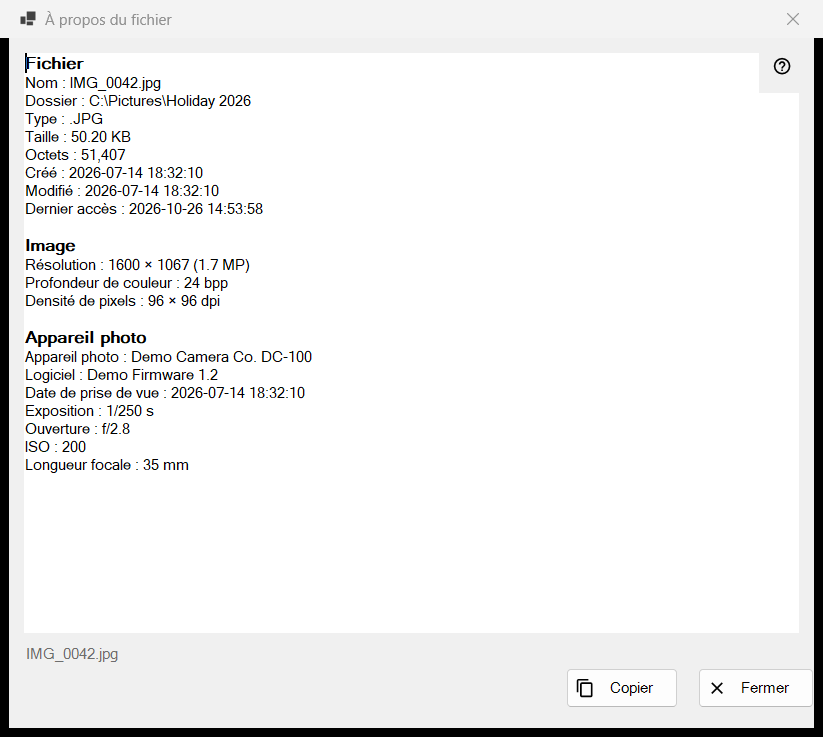
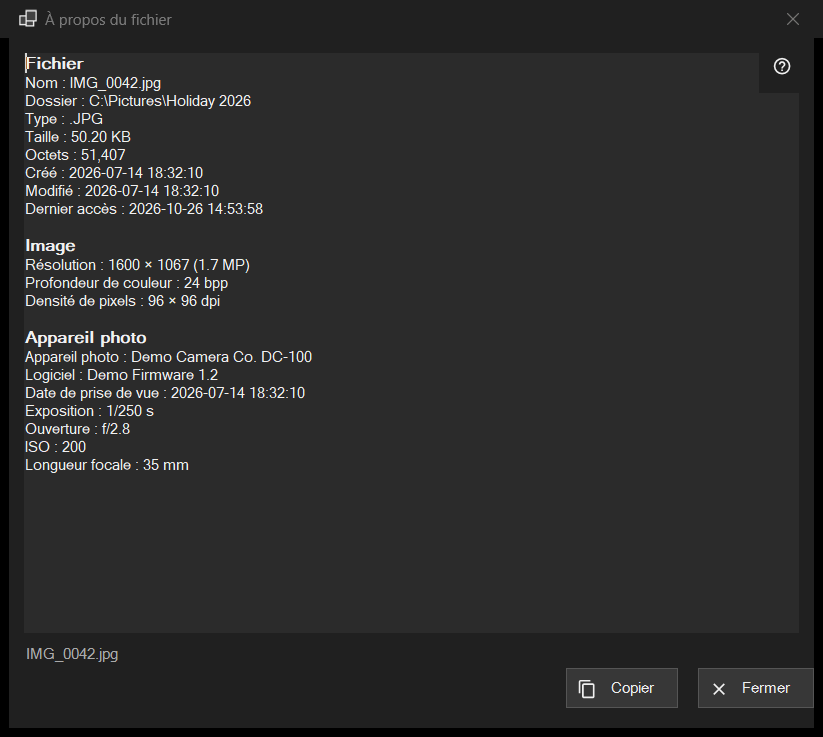

À propos du fichier
Objectif
Un instantané en lecture seule de ce que le programme sait du fichier affiché : le fichier lui-même, une image avec les données de son appareil photo, un document, et les pistes audio et vidéo. Il s'ouvre depuis l'élément i du premier panneau, ou depuis À propos du fichier dans le bloc fichier des menus de la visionneuse, et décrit le fichier tel qu'il était au moment du clic.


Dans cet ordre
- Affichez un fichier dans la visionneuse.
- Cliquez sur l'élément i du premier panneau, ou choisissez À propos du fichier dans le menu.
- Patientez un instant : la ligne d'état indique Lecture des métadonnées du fichier.. et les lignes se remplissent.
- Lisez les blocs, sélectionnez ce dont vous avez besoin et appuyez sur Copier pour placer tout le texte dans le presse-papiers.
- Appuyez sur Fermer ou sur Esc.
Les éléments
Fichier
Tout fichier possède ce bloc : Nom, Dossier, Type, Taille, Octets, Créé, Modifié, Dernier accès et Attributs. Une ligne sans rien à afficher est omise. Si aucun fichier n'est ouvert, la ligne d'état indique Aucun fichier sélectionné ; une copie temporaire issue d'une archive, une adresse distante ou un fichier disparu donne Le fichier n'est pas disponible, et aucune fenêtre ne s'ouvre.
Image
Pour une image : Résolution telle qu'affichée (une photo de téléphone enregistrée couchée se lit dans sa taille redressée), Profondeur de couleur et Densité de pixels, lorsque le fichier les enregistre.
Appareil photo
Lu dans les données EXIF de la photo : Appareil photo, Logiciel, Date de prise de vue, Exposition, Ouverture, ISO, Longueur focale et Auteur. Les coordonnées n'apparaissent que si la photo contient des données GPS, et Copier les inclut : vérifiez donc le texte avant de le partager.
Document
Pour un fichier texte : Lignes, Mots, Caractères et Encodage, plus Le fichier n'a été lu que partiellement lorsqu'il est trop gros pour être lu en entier. Pour un livre électronique : Nom et Auteur. Pour un PDF : Pages.
Médias, Vidéo et Audio
Pour les fichiers audio et vidéo, les balises (Nom, Artiste, Album, Année, Piste, Genre, Réalisateur, Série, Saison, Épisode, Durée) et la première piste de chaque type (Vidéo : Résolution, Images par seconde, Codec, Débit binaire ; Audio : Codec, Canaux, Fréquence d'échantillonnage, Débit binaire) sont ajoutées un instant après le reste, lorsque le moteur multimédia a fini de lire. La fenêtre ne l'attend jamais. Les flux réseau n'ont pas de lignes de pistes.
Copier et Fermer
Copier place tout le texte dans le presse-papiers et la ligne d'état indique Copié dans le presse-papiers ; si un autre programme occupe le presse-papiers, elle le dit et vous pouvez appuyer de nouveau sur Copier. Une sélection copiée avec Ctrl+C fonctionne aussi. Si rien n'a pu être lu, la zone indique Impossible de lire les informations du fichier. À côté des boutons, la ligne d'état affiche le nom du fichier. Passer à un autre fichier ne change pas cette fenêtre : cliquez de nouveau sur i pour le nouveau fichier.